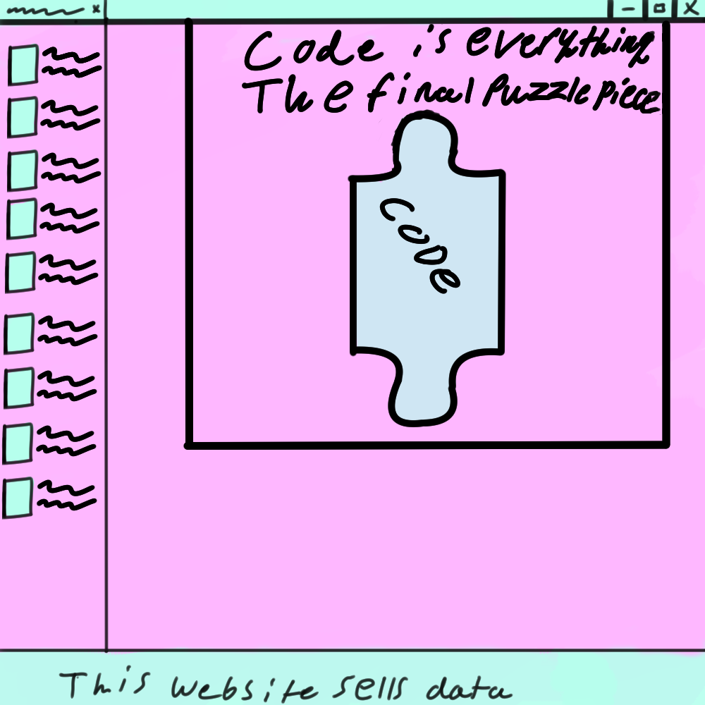

Coding Languages
by Chaz Dyer

image design © Chaz Dyer
The internet of things IOT for short runs on an insane amount of languages that are used for many various purposes. Whether its server side communications, running cloud services or formatting and presenting a website to the user in a digestible manner and that precisely is what I will be going over with this article.
For the purpose of being cursory I will only be discussing the main languages used today according to the research I have done.
HTML
HTML also known as Hyper Text Markup Language is the main markup language used for the displaying of documents in a web browser. HTML is very rarely seen on its own; it’s more of a framework that most websites will build off of mainly using html’s ability to embed scripts using javascript to change the way a website will function upon launch and css as a method of formatting and laying out the content.
C
Another forerunner of development in the IOT is C not only for its low amount of resources taken up which allows it to be used widely whether its on a wide array of hardware or being the framework for many other languages but also the fact that it is procedural instead of object oriented which goes great with the fact that C is compiled.
Java
Java is the most popular language used for web development; and also goes on to many other uses which include game development, software engineering and development on the android platform. Java is so widely used to a point where some studies have shown that over 15 billion devices have used an instance of java.
Python
Python is a programming language with a highly readable syntax being able to be interpreted and used in a way that more complex languages can not while still not compromising on what it is able to deliver which make it suitable for data analysis in a lot of cases.
Javascript
Java and Javascript tend to get confusing to tell the difference between quite a bit so let me explain; Java needs to be compiled and relies on the hardware whereas javascript is just text along with being more website oriented and because of that javascript does not have the functionality of making applets instead mainly being embedded in html web pages requiring different plugins or additional libraries to make it work